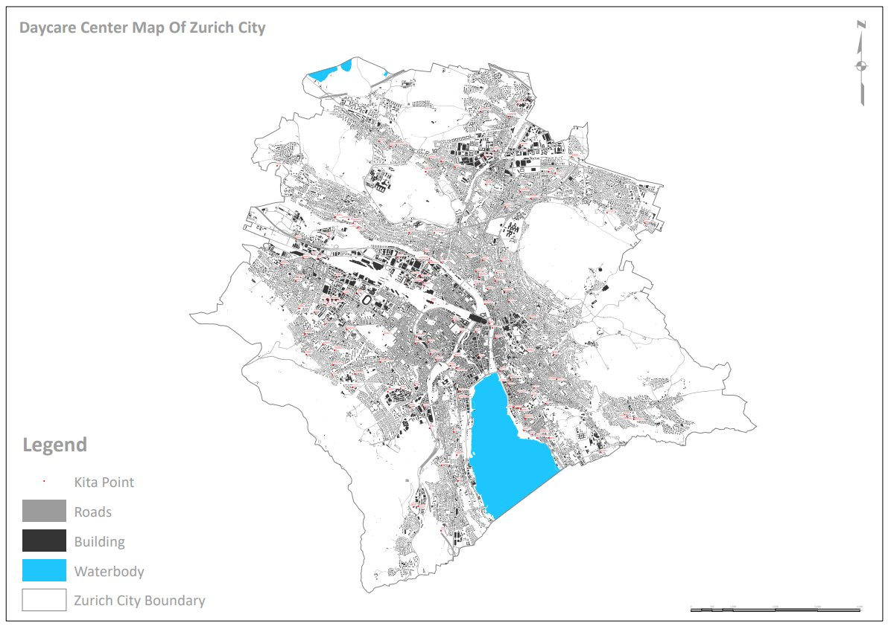

Urban GIS & Site SuitabilityFig. 1 Daycare centres (Kita) across the city of Zurich
Daycare Centres of Zurich
Map of every daycare centre in the city of Zurich.
- Location
- Zurich, Switzerland
- Year
- 2023
- Client
- Upwork client, Switzerland
- Tools
- ArcGIS


Challenge
Give the client a single, clear map of every daycare centre (Kita) in the city of Zurich.
Approach
- Geocoded every daycare centre (Kita) address to a point
- Added buildings, roads, Lake Zurich and other water bodies as context
- Designed a print-ready city map with legend, north arrow and scale
Results
- Kitas spread across all the built-up districts of the city
- No Kitas in the forested hills and the lake, which frame the city's coverage
- City-wide daycare map delivered as a print-ready PDF